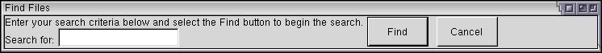
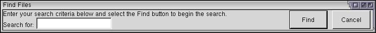
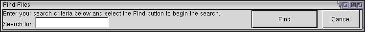

Using Spacers
In this section, we'll find out how to add some spacing in between the elements we have created.
Adding Spacers
One of the problems with developing user interfaces is that each user has a different display. Some users may have larger displays with higher resolutions and others may have lower resolutions. In addition, different platforms may have special requirements on the user interface. If adding support for multiple languages, the text for one language may require more room than another.
Applications that need to support multiple platforms and languages usually have their windows laid out with lots of space to allow for this. Some platforms and user interface toolkits provide components that are smart enough to resize and re-position themselves to fit the needs of the user. (Java uses layout managers for example.)
XUL provides the capability for elements to position and resize automatically. As we've seen, the find files window has appeared in a size that will fit the elements inside it. Each time we add something, the window gets bigger.
XUL uses a layout system called the 'Box Model'. We'll talk more about this is the next section but it essentially allows you to divide a window into a series of boxes that hold elements. The boxes will be positioned and resize based on specifications that you can define. For now, just know that the window element is a type of box.
Before we get into detail about boxes, we'll introduce another XUL element that is useful for layout, the spacer. A spacer is very simple and only requires one attribute, which will be explained in a moment. The simplest spacer looks like the following:
<spacer flex="1"/>
A spacer is used to place blank space into a window. Its most useful ability is that is can grow or shrink as the user resizes the window. This would be how one would place buttons on the right or bottom of a window and have them stick to the right or bottom edge no matter what size the window is. As we'll see, you can use a series of spacers to create a number of layout effects.
In this syntax above, the spacer has one attribute, called flex. This is used to define the flexibility of the spacer. In the case above, the spacer has a flex of 1. This makes the spacer element stretchy. If you place a spacer directly inside a window, the spacer will grow in size when the size of the window is changed.
We'll add a spacer to our find file dialog soon. First, let's take a look at what happens when the current dialog is resized.

If you change the size of the find files window, you can see that the elements have remained where they started. None of them have been moved or resized even though the window has more room in it. Let's see what happens when a spacer is added between the text box and the Find button.

By adding a spacer and resizing the window, you can see that the spacer has expanded to fill the space. The buttons have been pushed over. The code to add a spacer is shown below. Insert it just before the Find button.
<spacer flex="1"/>
<button id="find-button" label="Find"/>More About Flexibility
XUL lays out elements on a window by calculating suitable widths and heights for the elements and then adding space where they are flexible. Unless you specify information about the width and height of an element, the default size of an element is determined by its contents. You'll notice that the Cancel button in the dialogs has always set its width so that it fits the text inside it. If you create a button with a very long label, the button's default size will be large enough to hold the entire label. Other elements, such as the text box have chosen a suitable default size.
The flex attribute is used to specify if an element can change size to fit the box (in this case, the window) it is in. We've already seen the flex attribute applied to spacers, but it can be applied to any element. For example, you might want to have the Find button resize instead.

As you can see in the image, by placing a flex attribute on the Find button, it resizes when the window does. A spacer is really nothing special. It could really be considered a hidden button. It works much the same way as a button except it does not draw on screen.
You may have noticed something about the image above. Not only did the Find button grow in size but some space has appeared between the main label and the button. Of course, this is the spacer that we put in earlier. It has resized itself also. If you look closely enough, you should notice that the change in size has been divided up equally between the spacer and the button. The spacer has received half of the free space and the button has received the other half.
The reason we're seeing this effect is that both the spacer and the Find button have a flex attribute. Because both are flexible, both the button and the spacer resize equally.
What if you want to set one element to grow twice as large an another? You can use a higher number as the value of the flex attribute. The values of the flex element are a ratio. If one element has a flex of 1 and the next one has a flex of 2, the second one will grow at twice the rate of the first one. In effect, a flex of 2 says that this element has a flex that is two times the elements that have a flex of one.
The flex attribute isn't used to specify an actual size. Instead, it specifies how empty space it divided among the children of a container box. We'll look at boxes in the next section. Once the default sizes of the children of a box are determined, the flexibility values are used to divide up the remaining empty space in the box. For example, if a box is 200 pixels wide and contains two flexible buttons, the first 50 pixels and the other 90 pixels, there will be 60 pixels of space left over. If both buttons have a flex value of 1, the space will be divided evenly with 30 extra pixels of width going to each button. If the second button's flexibility was increased to 2, the first button would receive 20 pixels of the extra space and the second button would receive 40 pixels of extra space instead.
The flex attribute can be placed on any element, however it only has any meaning when placed on an element directly inside a XUL box. This means that even though you can place a flex on an HTML element, it will have no effect if that element is inside a non-box element.
Let's look at some examples:
Example 1:
<button label="Find" flex="1"/>
<button label="Cancel" flex="1"/>
Example 2:
<button label="Find" flex="1"/>
<button label="Cancel" flex="10"/>
Example 3:
<button label="Find" flex="2"/>
<button label="Replace"/>
<button label="Cancel" flex="4"/>
Example 4:
<button label="Find" flex="2"/>
<button label="Replace" flex="2"/>
<button label="Cancel" flex="3"/>
Example 5:
<html:div>
<button label="Find" flex="2"/>
<button label="Replace" flex="2"/>
</html:div>
Example 6:
<button label="Find" flex="145"/>
<button label="Replace" flex="145"/>
Example 1: in this case the flexibility is divided up evenly between both buttons. Both buttons will change size evenly.
Example 2: here, both buttons will grow, but the Find button will grow ten times as much as the Cancel button, because it has a flex value that is 10 times the flex value of the Find button. Available space will be divided into one part for the Find button and 10 parts for the Cancel button.
Example 3: only two of the buttons are marked as flexible here. The Replace button will never change size but the other two will. The Cancel button will always resize twice as large as the Find button because its flex value is twice as large.
Example 4: in this case, all three buttons are flexible. Both the Find and Replace buttons will be the same size but the Cancel button will be somewhat larger (50% larger to be exact).
Example 5: here, the two buttons are placed inside a div element. Flexibility is meaningless here as the buttons are not directly in a box. The effect would be the same if the flex attributes were left out.
Example 6: because the flex values are the same on both buttons, their will flex equally. This would work just as well with flex values of one instead of 145. There's no difference in this case. It is recommended that you use lower numbers for readability.
Note that other factors such as the button labels and button minimum sizes will affect the actual sizes of the buttons. For instance, a button won't shrink less than the space needed to fit its label.
Specifying a flex value of 0 has the same effect as leaving the flex attribute out entirely. It means that the element is not flexible at all. You may also sometimes see a flex value specified as a percentage. This has no special meaning and is treated as if the percent sign was not there.
You may have noticed that when you resize the find file dialog vertically, the buttons resize themselves to fit the height of the window. This is because all of the buttons have an implied vertical flex given to them by the window. In the next section we'll learn how to change this.
(Next) Next, we'll learn some additional features of buttons.